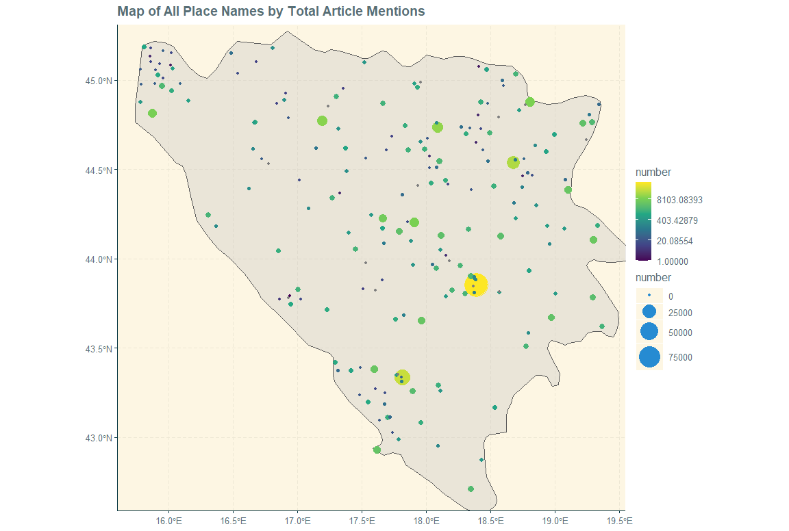
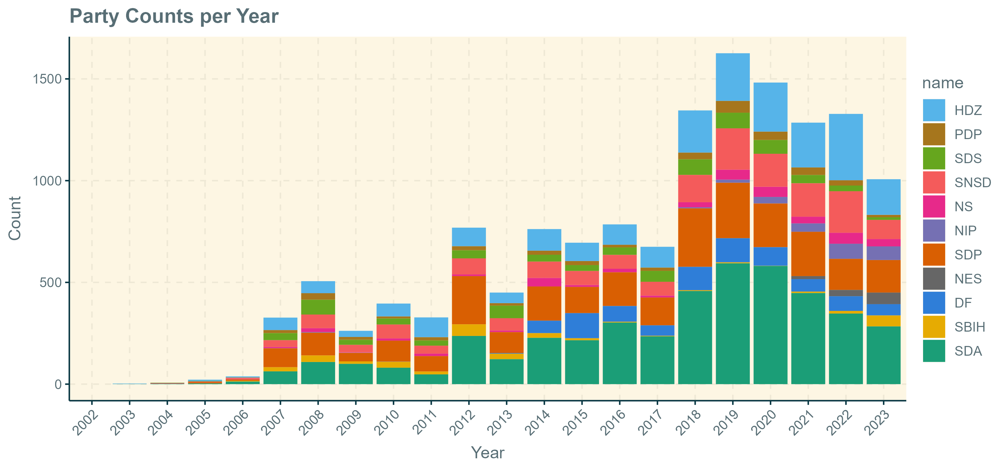
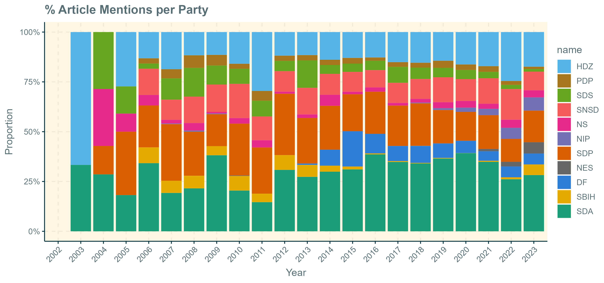
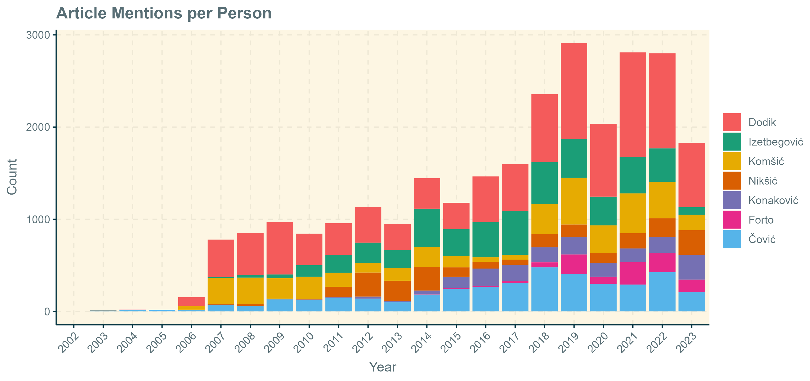
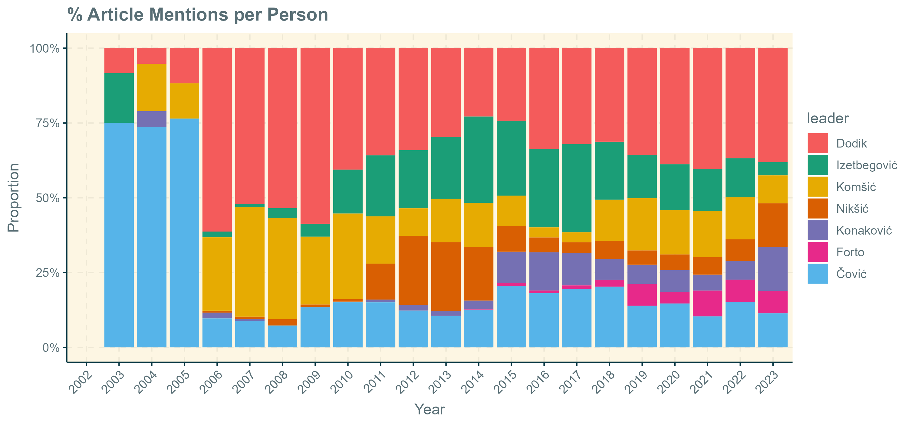
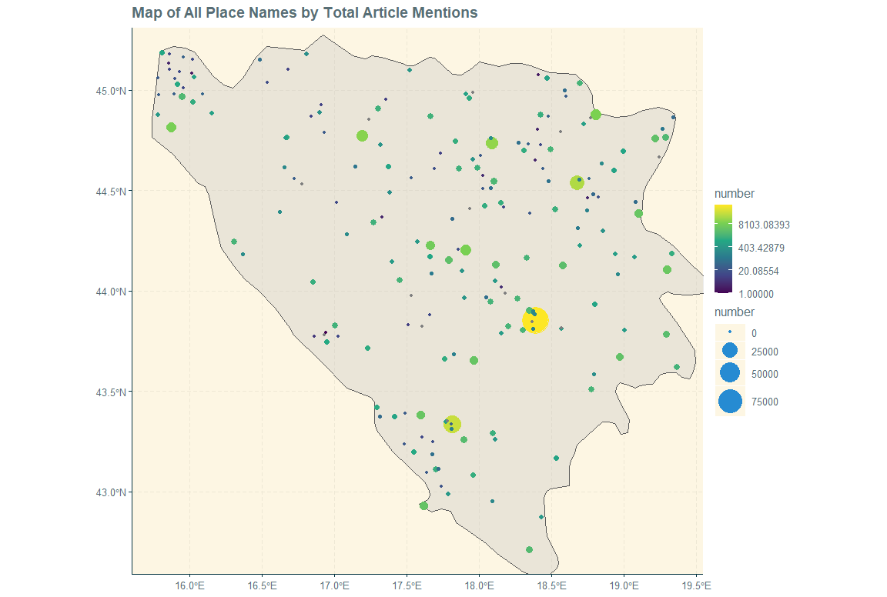
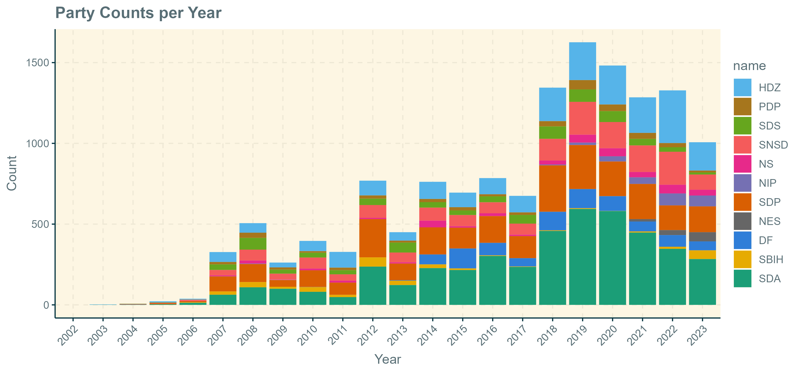
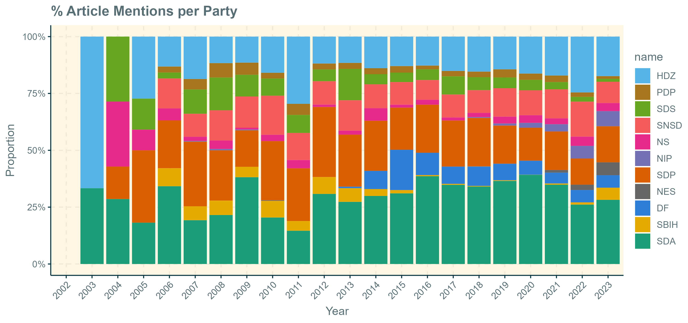
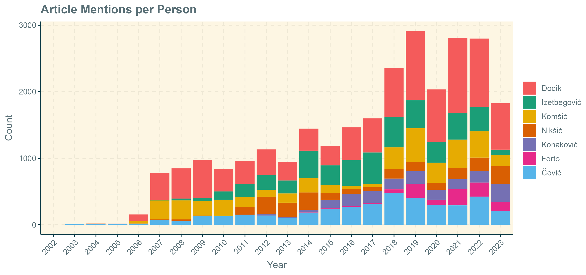
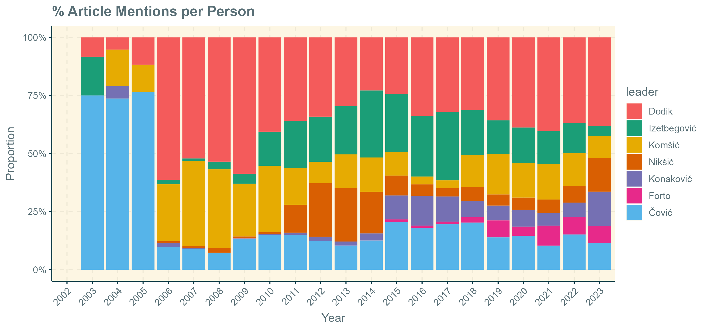

September 2024
More than ever before, people rely on the internet for their daily news and information. With the rapid proliferation of internet access across the globe, more and more people are turning away from traditional, analogue, news outlets in favor of social media such as Twitter and Facebook, or large online-only news platforms. Given that these web-based news portals have become the primary source of information for a majority of the population, they are naturally of great interest to social scientists, who wish to know more about the media landscape, and what societal priorities the media landscape reflects.
This project aims to make use of the easily accessible online news data by focusing on klix.ba, the most visited and most influential news portal in Bosnia. By scraping, systematizing, and analyzing all news articles on the website, I aim to map out what type of news Bosnians engage with, and how they engage with it, hopefully providing a unique insight into the broader media trends in the country. The reason for choosing Bosnia is that general efforts into collecting and archiving news articles have been largely absent to my knowledge, underscoring the importance of such work in the future.
The data is completely sourced from klix.ba via a python web scraper, written using BeautifulSoup.
 









Through this project, we seek to understand the media landscape in Bosnia and provide insights into how news is consumed and produced, offering a reflection of Bosnian society’s interests and media trends.